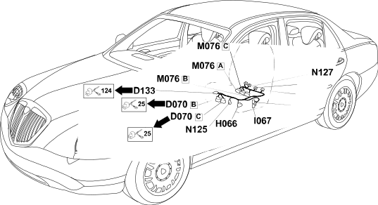

36 left seat
- Path
- Electrical equipment > Wiring > 36 left seat
- Kind
- wiring harness
- Applies to
- all engines; all production periods
- Interactive page
- https://sloeber94.github.io/elrnDB-lThss/en/#/207369
Applies to: all engines; all production periods

Topics that link to this page (15)
- D070B Driver's seat coupling(REAR)
- D070C Driver's seat coupling(REAR)
- D133 Left front backrest cushion coupling(LEFT SEAT)
- H066 Driver's seat movement controls(LEFT SEAT)
- I065 Driver's seat heating switch(LEFT SEAT)
- I067 Driver's lumbar adjustment switch(LEFT SEAT)
- J107 Left front seat polyswitch(LEFT SEAT)
- K130 Left front seat sliding potentiometer(LEFT SEAT)
- M076A Seats/mirrors with memory control unit(LEFT SEAT)
- M076B Seats/mirrors with memory control unit(LEFT SEAT)
- M076C Seats/mirrors with memory control unit(LEFT SEAT)
- N125 Left front seat rear height adjustment motor(LEFT SEAT)
- N126 Left front seat front height adjustment motor(LEFT SEAT)
- N127 Left front seat sliding adjustment motor(LEFT SEAT)
- O046 Left front seat heater pad with sensor(LEFT SEAT)